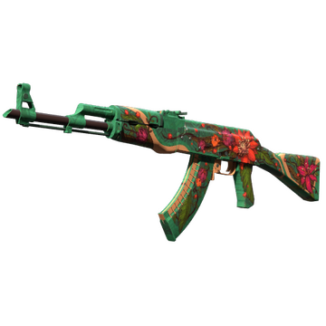
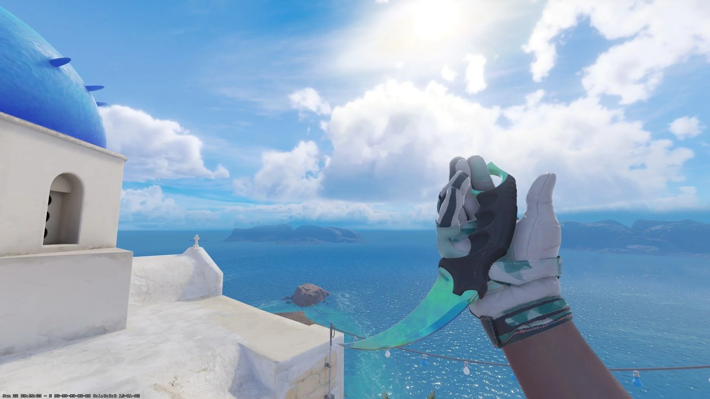
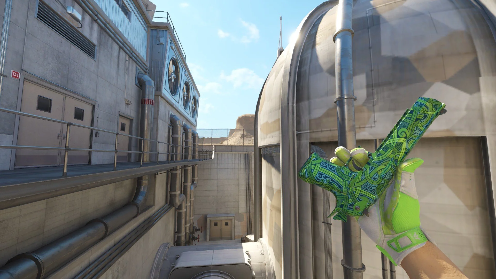
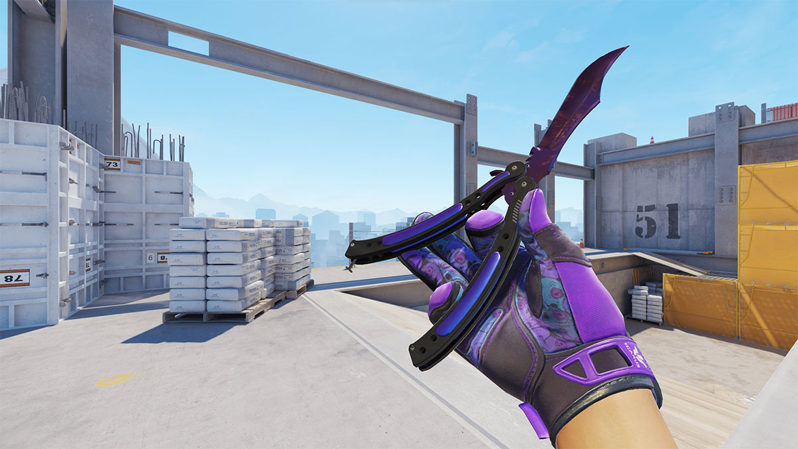
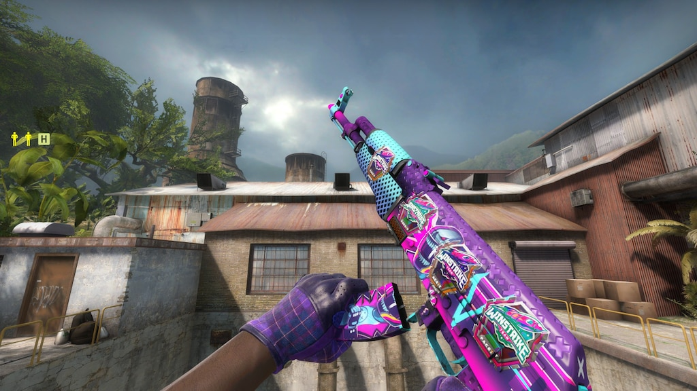

Geen wapens gevonden.
Abonneer je op de Skin Context RSS-feed en ontvang updates rechtstreeks in jouw feed reader.
Feed URL: https://skin-context.vercel.app/data/feed.xml
https://skin-context.vercel.app/data/feed.xml